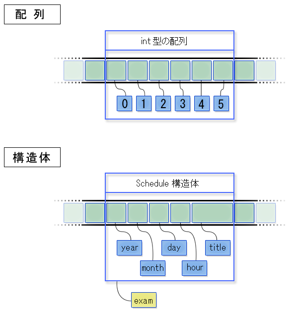

簡単なスケジュール管理をおこなうプログラムを作成してみましょう。簡単のために、管理する項目は以下の 2 つだけとします。 また管理する最大の予定数は 100 とします。
- 開始時間（年、月、日）
- 表題
2 つしか項目がないといっても、実際には開始時間は年・月・日・時の 4 つの要素に分かれますし、表題についてもさまざまなパターンが考えられます。また、機能としては以下を実現することにします。
- キーボードから新しい予定を入力できること
- 入力した予定を古い順に並べて表示できること
このような機能を実現するには、管理する項目をひとまとまりにしておく必要があります。 今まで学んだ内容を振り返ると、これは配列を用いて実現できそうです。たとえば開始時間はすべて整数になるため、4 つの要素（年、月、日、時）を持つ配列で表せます。これが予定の個数分必要になるため、予定の最大件数である 100 件分必要になります。つまり 100 x 4 の 2 次元配列が必要になります。次に、表題は文字列で表現することにします。文字列の最大長を 100 文字とすると、100 x 100 の 2 次元配列が必要になります。以上の配列をC言語のプログラムで表現すると以下のようになります。/* 開始時間 */
int time[100][4];
/* 表題 */
char event[100][100];このように 2 種類の配列を用いれば、必要なデータを扱うことができます。しかしこれでは以下の 2 つの理由で、プログラムを書くのが大変になってしまいます。
- 複数の配列をまとめて扱わなければならない。このため、プログラム中で一部の配列だけ処理し、残りの配列の処理を忘れるという間違いをおかしやすい。
- 将来必要なデータの種類が追加で増えた場合、新たな配列が追加になる。その際、何箇所ものプログラムの修正が必要になる可能性がある。
1 つの配列にすべてのデータをまとめられれば、プログラム中の処理の記述はかなり簡潔になりますが、配列には同じデータ型の値しか保存できません。たとえば、数値である開始時間と、文字列である表題を同じ配列に保存できません。このため、配列を用いている限り、上のような問題が避けられません。
このような複数のデータ型で構成されるデータを、容易に扱う方法はないのでしょうか？ たとえば現実世界であれば、1 つの予定を 1 枚のカードにまとめて記述することができます。 1 枚のカードに「開始時間」と「表題」の 2 つの項目を作り、1 つの予定についての情報は 1 枚のカードにまとめて書いてしまうことができます。 こうすれば、分割すると不自然な情報（開始時間と表題）が 1 枚のカードにおさまるため、管理がとても容易です。先程の 2 つの配列で別々に管理するやり方は、現実世界で考えると、 開始時間カードと表題カードを別々に作り、互いに関連性を失わないように管理する、という少々非現実的な手法だということが分かります。構造体の宣言
上のような問題に対処するため、C言語には異なるデータ型の値をひとまとめにする機能があります。これを構造体（structure）といいます。構造体の宣言は下のような形をとります。struct 《構造体名》 {
《データ型》 《メンバ名》;
《データ型》 《メンバ名》[《要素数》];
...
};2 行目、3 行目はまとめたい値のデータ型とその名前を書きます。3 行目は配列型の値をふくめたい場合の書き方です。先ほどの予定のデータをひとまとめにした構造体の宣言は下のようになります。struct schedule {
int year; /* 年 */
int month; /* 月 */
int day; /* 日 */
int hour; /* 時 */
char title[100]; /* 表題 */
};この構造体は int 型の値を 4 つ、char 型の配列を 1 つ含みます。それぞれ、名前は year、month、day、hour、title です。1 個の構造体の中に含まれれる値のことをメンバ（member）、それらの名前をメンバ名といいます。また、この構造体自体にも名前がついており、上の例では schedule です。struct の次にあるのが構造体の名前です。上のように構造体を宣言すると、以降は構造体を通常のデータ型と同じように扱うことができます。データ型の名前は struct《構造体名》です。単語 2 つで 1 つの名前です。例えば、struct schedule exam;
struct schedule todo[10];
struct schedule* sptr;3 つの行はそれぞれ exam、todo、sptr の 3 つの変数を宣言します。exam はデータ型が struct schedule である変数、todo は struct schedule 型の配列、sptr は struct schedule 型をさすポインタ型の変数です。struct schedule の部分を 1 個のデータ型の名前と見ると、これまで紹介した変数の宣言と同じ形をしていることがわかります。なお、変数を宣言するときは、= に続けて初期値を書くことができるのですが、構造体の場合、少し複雑なので、上の例では書いていません。初期値は後ほど代入することとします。構造体のメンバの値を読み出したり、メンバに新しい値を代入したりするには、.（ドット）演算子を使います。構造体型の変数（あるいは計算結果が構造体になるような式）に続けて.《メンバ名》と書きます。構造体を使ったプログラムの例を示します。#include <stdio.h>
#include <string.h>
struct schedule {
int year; /* 年 */
int month; /* 月 */
int day; /* 日 */
int hour; /* 時 */
char title[100]; /* 表題 */
};
int main() {
struct schedule exam;
/* 「2008/09/02 13:00 前期筆記試験」という情報を作成する */
exam.year = 2008;
exam.month = 9;
exam.day = 2;
exam.hour = 13;
strcpy(exam.title, "前期筆記試験");
printf("%04d/%02d/%02d %02d:00 %s\n",
exam.year, exam.month, exam.day, exam.hour, exam.title);
return 0;
}main 関数の中では、まず構造体型の変数 exam を宣言しています。次に各メンバに値を代入しています。例えばexam.year = 2008は、exam のメンバ year に 2008 を代入します。exam.titleへは代入を使わずに、strcpy 関数で文字列をコピーしています。これは、title は char 型の配列なので、各要素にそれぞれ代入しなければならないからです。その後、printf 関数で、変数 exam の各メンバの値を表示します。exam.yearなど、. （ドット）演算子でメンバの値を読み出しているのがわかります。このプログラムの実行結果は下のようになります。2008/09/02 13:00 前期筆記試験ひとかたまりのデータを取り扱うという意味では、配列と構造体はよく似ています。実際、メモリ上の姿は、どちらも、各要素やメンバのためのメモリ領域を連続的に並べて配置したものです。しかし、配列の場合、各要素はインデックスという番号で指定します。一方、構造体の場合、各メンバは名前で指定します。一般に、同じ種類のデータ（配列の各要素）に対して同じような処理を繰り返しほどこしたい場合には配列が、そうでない場合には構造体が用いられます。
配列と構造体
構造体の初期化
構造体を宣言するときは、配列の場合と同じように、{ } で囲んで初期値を与えることができます。構造体のメンバの数が増えると間違いをおこしやすくなるので、使うときには注意が必要ですが、例えば上のプログラムの 13 行目から 20 行目は次のように書き直せます。struct schedule exam = { 2008, 9, 2, 13, "前期筆記試験" };1 行で書くことができますが、構造体のメンバの記述順序を覚えておき、その順番とおりに記述する必要があります。間違いをおかしやすいので、今回のように単純な構造体でなければ利用しないほうがいいでしょう。構造体のメンバ
いくつかの int 型や double 型の値を 1 つにまとめたものが構造体の値です。これを値とする変数が構造体型の変数です。int 型の変数と int 型の値が異なるものであるように、構造体型の変数と構造体の値は異なるものですから、注意してください。困ったことに、しばしば、構造体の値と構造体型の変数をどちらも「構造体」と呼ぶことがあるので、混乱しやすいからです。構造体の値のメンバは、まとめられた値の一部です。例えば schedule 構造体の year メンバは、1 つにまとめられた 5 の値のうち、最初の int 型の値のことです。では構造体型の変数のメンバは何だと考えればよいでしょうか？構造体型の変数は、それぞれのメンバの型の変数を 1 つにまとめたもの、と考えることができます。構造体型の変数のメンバは、1 つにまとめられた変数のうちの一部です。例えば schedule 構造体型の変数 exam は、5 つの変数を 1 つにまとめたものと考えられます。その year メンバ、つまり exam.year は、1 つにまとめられた変数のうちの、最初の int 型の変数のことです。構造体型の変数を 1 つ宣言すると、その構造体のメンバの個数分の変数がまとめて宣言されます。個々の変数を直接扱いたいときは exam.year のように変数名にメンバ名を付加して区別します。一方、それらの変数をまとめて扱いたいときは、exam のように変数名だけを書きます。例えば exam とだけ書いて、その変数の値を読み出すと、得られる値は各メンバに対応する変数の値を全てまとめたものとなります。このまとめた値が、構造体の値というわけです。
構造体の配列
予定のデータを 1 個の構造体にまとめると、取り扱いが用意になります。しかしスケジュール管理の場合は、多数の予定を扱わなければなりません。これに対処するために、構造体の配列を用いることにします。構造体を表すデータ型の名前は、int のような他の普通のデータ型の名前と同様に扱えます。構造体の配列を宣言する場合も同様です。以下のプログラム例を見て下さい。#include <stdio.h>
#include <string.h>
struct schedule {
int year; /* 年 */
int month; /* 月 */
int day; /* 日 */
int hour; /* 時 */
char title[100]; /* 表題 */
};
int main() {
struct schedule schedules[3];
schedules[0].year = 2008;
schedules[0].month = 4;
schedules[0].day = 11;
schedules[0].hour = 10;
strcpy(schedules[0].title, "講義ガイダンス");
schedules[1].year = 2008;
schedules[1].month = 7;
schedules[1].day = 14;
schedules[1].hour = 15;
strcpy(schedules[1].title, "ゼミ");
schedules[2].year = 2008;
schedules[2].month = 3;
schedules[2].day = 2;
schedules[2].hour = 12;
strcpy(schedules[2].title, "論文提出日");
for (int i = 0; i < 3; i = i + 1)
{
printf("%04d/%02d/%02d %02d:00 %s\n",
schedules[i].year, schedules[i].month, schedules[i].day, schedules[i].hour,
schedules[i].title);
}
return 0;
}main 関数の最初で要素数が 3 の構造体の配列 schedules が宣言されています（この例で構造体名は schedule ですが配列名は schedules で、後者は複数形にしています）。配列 schedules の各要素の構造体のメンバにアクセスするにはschedulers[0].yearなどと書きます。schedulers[0]（の計算結果）は、配列の 0 番目の要素になっている構造体です。それに.year（ドット、メンバ名）と続けて書きます。プログラムの実行結果を以下に示します。2008/04/11 10:00 講義ガイダンス
2008/07/14 15:00 ゼミ
2008/03/02 12:00 論文提出日構造体を引数にとる関数
構造体を関数の引数として渡すことも可能です。以下に、構造体 schedule の各メンバの値を表示する関数を示します。/* 構造体scheduleの全メンバを表示する */
void printSchedule(struct schedule data) {
printf("%04d/%02d/%02d %02d:00 %s\n",
data.year, data.month, data.day, data.hour, data.title);
}struct scheduleがデータ型の名前ですから、関数printScheduleは、struct schedule型の引数dataを受け取って計算する関数となります。構造体を引数にするときは、今までintやdoubleと書いていたところにstruct scheduleと書くだけです。構造体を関数の引数として渡すと、構造体の各メンバの値がすべてまとめて関数の引数として渡されます。引数を受け取る関数の側では、渡された各メンバの値から新しい構造体を作ります。printSchedule 関数の引数 data の値はこの構造体です。このため、第 9 章の swap 関数と同様に、引数として渡された構造体の値を関数内で変更しても、元の構造体には反映されません。以下にその例を示します。#include <stdio.h>
#include <string.h>
struct schedule {
int year; /* 年 */
int month; /* 月 */
int day; /* 日 */
int hour; /* 時 */
char title[100]; /* 表題 */
};
/* 年を強制的に2年進める */
void update2years(struct schedule target) {
target.year = target.year + 2;
}
/* 構造体scheduleの全メンバを表示する */
void printSchedule(struct schedule data) {
printf("%04d/%02d/%02d %02d:00 %s\n",
data.year, data.month, data.day, data.hour, data.title);
}
int main() {
struct schedule exam;
/* 「2006/10/30 10:00 ハロウィン」という予定を作成する */
exam.year = 2006;
exam.month = 10;
exam.day = 30;
exam.hour = 10;
strcpy(exam.title, "ハロウィン");
printSchedule(exam);
/* 構造体 exam のメンバの値を変更する？ */
update2years(exam);
printSchedule(exam);
return 0;
}このプログラムを実行すると次のようになります。2006/10/30 10:00 ハロウィン
2006/10/30 10:00 ハロウィンupdate2years 関数を呼んでいるにもかかわらず、変数 exam の値は変わっていません。構造体も int 型の値などと同じように扱われるのです。int 型の値の場合と同様に、変数 exam の値を update2years 関数の中から変えたいときは、次章で説明する構造体をさすポインタを使わなければなりません。構造体を関数に引数として渡す処理に似た処理として、構造体を別な変数に代入する、という処理があります。代入の場合も、右辺の構造体の各メンバの値が、それぞれ左辺の構造体の対応するメンバに代入されます。したがって、次のようなプログラムを実行しても、変数 exam の値はやはり変化しません。#include <stdio.h>
#include <string.h>
struct schedule {
int year; /* 年 */
int month; /* 月 */
int day; /* 日 */
int hour; /* 時 */
char title[100]; /* 表題 */
};
/* 構造体scheduleの全メンバを表示する */
void printSchedule(struct schedule data) {
printf("%04d/%02d/%02d %02d:00 %s\n",
data.year, data.month, data.day, data.hour, data.title);
}
int main() {
struct schedule exam;
/* 「2006/10/30 10:00 ハロウィン」という予定を作成する */
exam.year = 2006;
exam.month = 10;
exam.day = 30;
exam.hour = 10;
strcpy(exam.title, "ハロウィン");
struct schedule exam2;
exam2 = exam; /* exam2 へ exam の値を代入 */
/* 構造体 exam のメンバの値も変わる？ */
exam2.year = exam2.year + 2;
printSchedule(exam);
return 0;
}実行結果は次のようになります。変数 exam の値が変わることはありません（変数 exam2 の値は変わり、year が 2008 になります）。2006/10/30 10:00 ハロウィン
2006/10/30 10:00 ハロウィン配列を引数にとる関数
引数として int 型の値を渡しても、構造体を渡しても、関数の中から元の変数の値を変えることはできません。しかしこれには例外があり、配列を関数に引数として渡したときだけ、挙動が異なります。第 7 章で文字列を操作する関数を紹介しましたが、これらは配列を引数として受け取り、受け取った配列の要素の値を変更する関数でした。配列を関数に引数として渡すと、各要素の値がそれぞれ関数に渡され、それを受け取った関数の側で新しい配列を作るわけではないのです。したがって配列についてなら、2 つの配列を引数として受け取り、各要素の値を交換する swap 関数を作成することができます。#include <stdio.h>
void swap(int a[], int b[], int size)
{
for (int i = 0; i < size; i = i + 1) {
int oldA = a[i];
int oldB = b[i];
a[i] = oldB;
b[i] = oldA;
}
}
int main() {
int size = 10;
int arrayA[] = {1, 2, 3, 4, 5, 6, 7, 8, 9, 10};
int arrayB[] = {1, 4, 9, 16, 25, 36, 49, 64, 81, 100};
/* 配列の全要素を表示する */
printf("arrayA = ");
for (int i = 0; i < size; ++i) {
printf("%d ", arrayA[i]);
}
printf("\n");
swap(arrayA, arrayB, size);
/* 配列の全要素を表示する */
printf("arrayA = ");
for (int i = 0; i < size; ++i) {
printf("%d ", arrayA[i]);
}
printf("\n");
return 0;
}実行結果は次のようになります。arrayA の各要素の値が変化します。arrayA = 1 2 3 4 5 6 7 8 9 10
arrayA = 1 4 9 16 25 36 49 64 81 100関数 swap の宣言に注目してください。for 文を使って全ての要素の値を個別に交換しています。けして引数 a と b の値を直接交換しているわけではありません。実際、関数 swap を次のように変えてしまうと、正しくないプログラムになってしまいます。void swap(int a[], int b[], int size)
{
int oldA[] = a;
a = b;
b = oldA;
}配列名とポインタ
このように配列を関数に引数として渡すときの挙動は例外的ですが、前章で説明した配列名の暗黙の読み替え規則を考えると、そのような挙動も一貫性がとれているといえます。変数 arrayA と arrayB の値がどちらも int 型の配列だとすると、読み替え規則により、次の関数呼び出しはどちらも同じことになります。swap(arrayA, arrayB, 10);
swap(&arrayA[0], &arrayB[0], 10);どちらも、関数に渡されるのは配列の先頭の要素をさすポインタです。ポインタを受け取った関数の側では、そのポインタがさす（要素を先頭とする）配列そのものが引数の値となります。関数の引数の中でも、配列型の引数だけは少し挙動が特別なのです。このため、配列を引数として受け取った関数は、受け取った配列の要素の値を変更できる、という挙動も合理的ということになります。
演習 10−1
利用者にキーボードから最大 10 件の予定を入力させ、入力が終わったら、それまで入力された予定を全て表示するプログラムを作成してください。1 件の予定は、年、月、日、時、表題からなるとします。また、個々の予定を入力する前に「入力を継続するかどうか」を聞き、継続するなら 1、しないなら 0 をキーボードから入力させ、0 であれば入力終了と見なすようにしてください。参考として、キーボードから予定を入力させ、入力されたデータを構造体 schedule のメンバに代入するプログラムを以下に示します。#include <stdio.h>
#include <string.h>
struct schedule {
int year; /* 年 */
int month; /* 月 */
int day; /* 日 */
int hour; /* 時 */
char title[100]; /* 予定 */
};
int main() {
struct schedule entry;
int input = 0;
printf("スケジュールを入力する場合は1を、しない場合は0を入力してください。");
scanf("%d", &input);
if (input == 1) {
int year;
int month;
int hour;
int day;
char title[256];
printf("年を入力してください: ");
scanf("%d", &year);
printf("月を入力してください: ");
scanf("%d", &month);
printf("日を入力してください: ");
scanf("%d", &day);
printf("時を入力してください: ");
scanf("%d", &hour);
printf("タイトル入力してください: ");
scanf("%s", &title);
entry.year = year;
entry.month = month;
entry.day = day;
entry.hour = hour;
strcpy(entry.title, title);
}
return 0;
}
Copyright 2009-2011 the Compview project,
Tokyo Institute of Technology. All rights reserved.
{kind=link}